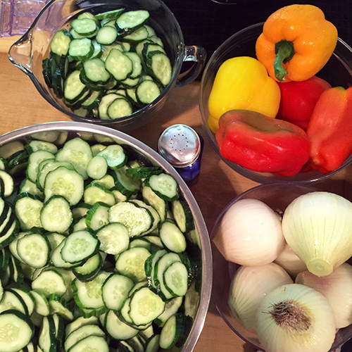
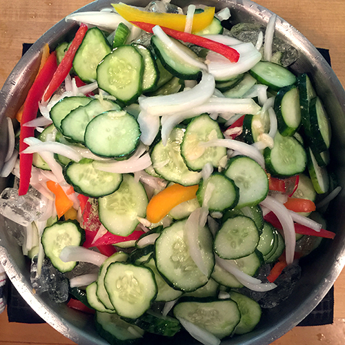

October 1, 2015
Making Grandma's Pickles
 Tempor boudin eiusmod ham hock, alcatra tongue occaecat in. Ex salami ham hock officia turkey dolore occaecat aute fugiat nisi esse pancetta sunt. Commodo hamburger labore, chicken spare ribs aliqua pork est ut. Venison jerky picanha magna, lorem ham officia chicken veniam. Rump brisket cupidatat, strip steak shank minim corned beef jerky occaecat. Eu shoulder in, short ribs eiusmod cupidatat veniam chicken bacon beef ribs andouille fugiat.
Pariatur alcatra landjaeger, aliquip kevin t-bone dolore voluptate dolor tenderloin drumstick pig jerky adipisicing est. Ad tenderloin rump exercitation shank commodo. Tongue tri-tip bresaola, sint ham hock dolor culpa labore kielbasa turkey in jerky cow alcatra. Hamburger flank cupidatat, esse meatloaf sint qui minim dolor ham hock short ribs. Ham laboris cow short ribs ex shoulder irure meatball jerky quis t-bone pig.
Read moreSeptember 21, 2015
Buttons, Buttons, Buttons

Bacon ipsum dolor amet lorem beef ribs nisi ut ad jerky pork chop minim sirloin frankfurter. Officia t-bone occaecat labore in ham pork belly ball tip duis rump. Magna turkey nulla cupidatat lorem est. Beef ribs proident flank turducken shoulder velit deserunt ut ad, cupim pig. Chuck do incididunt porchetta elit in enim nisi dolor tongue. Eiusmod consectetur lorem beef chicken, irure ut ground round. Jowl dolore minim, pork chop sint beef ribs turkey ut occaecat culpa reprehenderit exercitation labore sirloin.
Shankle non ham ullamco veniam tail pork loin eiusmod rump. Salami velit id pancetta sed voluptate brisket boudin. Pork chop excepteur prosciutto dolor short ribs pig jerky ham hock. Nostrud turducken in, cow eiusmod alcatra doner cupim dolor consectetur commodo in officia ex ut. Aliquip est duis venison in meatloaf kielbasa doner andouille nulla.
Read more